Brow Lamination
Alinhamento dos fios para sobrancelhas mais cheias, disciplinadas e com aspecto natural por semanas.
Micropigmentação, estética e procedimentos paramédicos com olhar individual.
Cada rosto tem sua história e cada necessidade pede uma técnica própria. Comece por uma avaliação personalizada e descubra o protocolo mais adequado para você, com naturalidade e segurança.
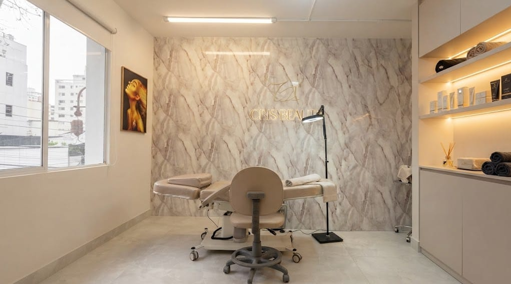
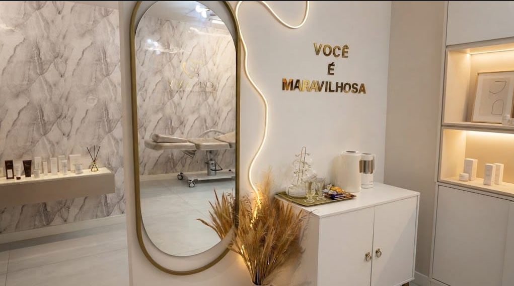
Sou Cristina Lima e cuido de cada atendimento com experiência, atenção aos detalhes e respeito à sua naturalidade. Antes de qualquer procedimento, faço uma avaliação personalizada para entender o que você precisa e definir a técnica ideal.
Da micropigmentação estética à reconstrução paramédica, em ordem alfabética para você encontrar o que procura.
Alinhamento dos fios para sobrancelhas mais cheias, disciplinadas e com aspecto natural por semanas.
Camuflagem de cicatrizes, incluindo cicatriz pós lifting facial, leucodermia e vitiligo, com técnica paramédica e avaliação individual de cada caso.
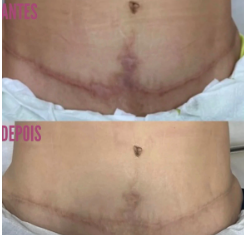
Correção areolar pós mastopexia e redesenho de trabalhos feitos por outro profissional, com refinamento de forma e cor.
Pigmento aplicado rente aos cílios para um traço fino e natural, do infralash discreto ao efeito mais marcante, sem uso diário de delineador.
Estudo do formato ideal para o rosto, com alinhamento e simetria personalizados.
Fios desenhados um a um imitando o crescimento natural do pelo, para sobrancelhas com aspecto fiel e definido.
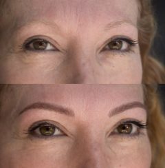
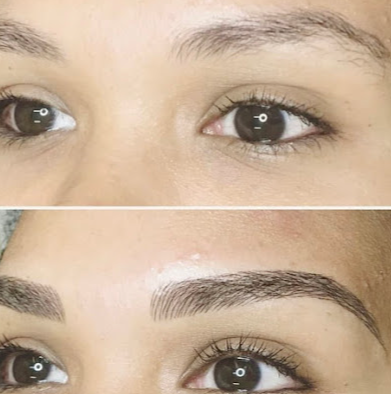
Correção e uniformização do tom labial, realçando cor, contorno e aspecto saudável sem perder a naturalidade.
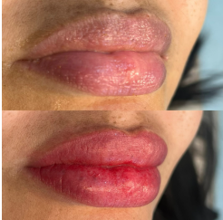
Uniformização do tom dos lábios para um aspecto mais saudável e natural.
Devolve forma e coloração à região areolar após procedimentos cirúrgicos, incluindo o redesenho pós câncer de mama, com abordagem delicada e progressiva.
Indicada após lesões, cirurgias ou deformações na região labial. Recompõe simetria e harmonia ao sorriso por meio da micropigmentação paramédica.
Indicada para quem deseja remover ou clarear uma micropigmentação ou tatuagem anterior antes de um novo procedimento ou por não se identificar mais com o resultado.
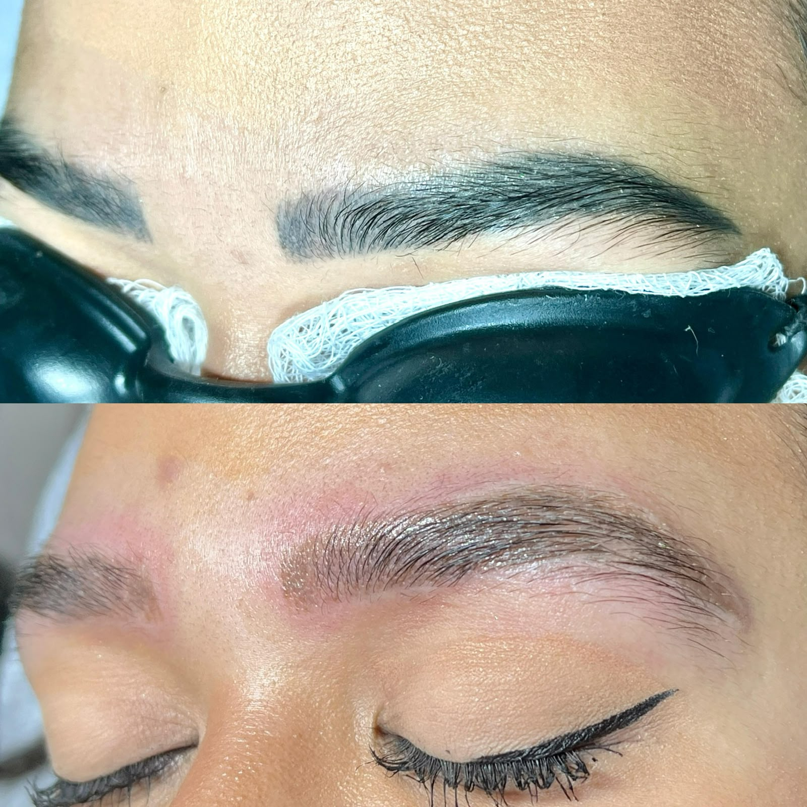
Remoção progressiva de tatuagens por laser, indicada para quem deseja clarear ou remover um desenho anterior por completo ou antes de uma cobertura.
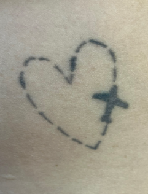
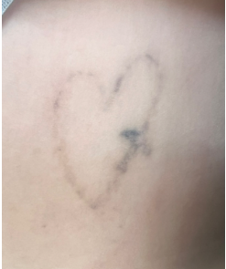
Tratamento não invasivo com ativos hidratantes e ácido hialurônico para lábios macios, viçosos e com brilho natural, sem pigmentação definitiva.
Técnica e pigmentos específicos para uniformizar pontinhos claros ou amarelados na região labial, mantendo a naturalidade.
Efeito de sombra suave e esfumada, mais intenso na cauda e leve no início, como uma maquiagem sutil e duradoura.
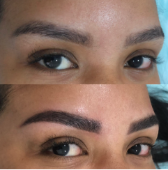
Alguns resultados de atendimentos realizados. Cada caso é único e o resultado depende da avaliação individual.
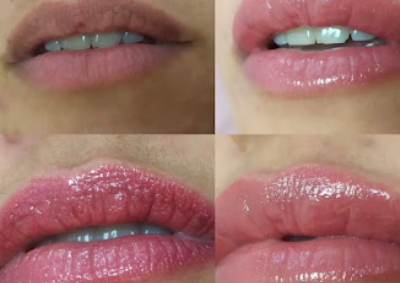
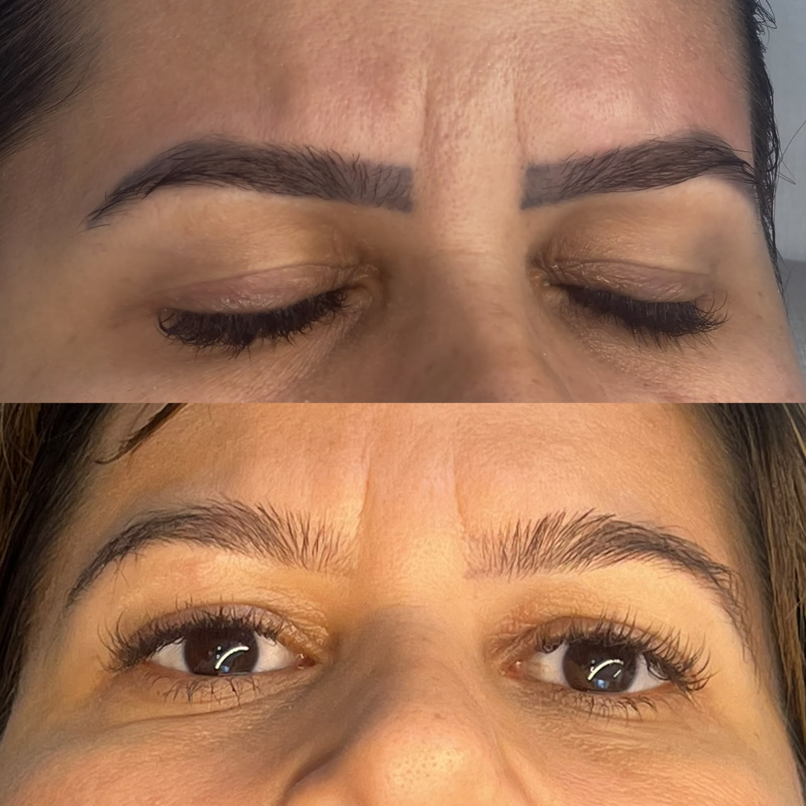
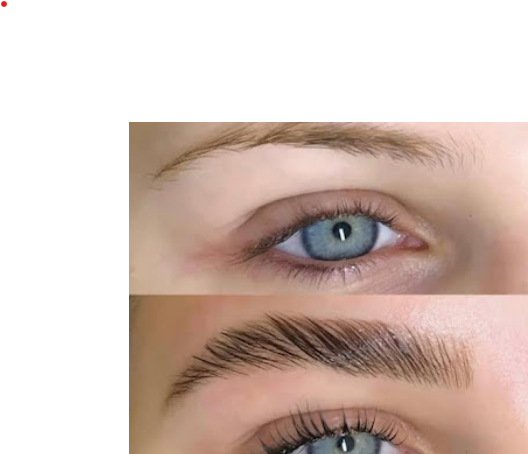
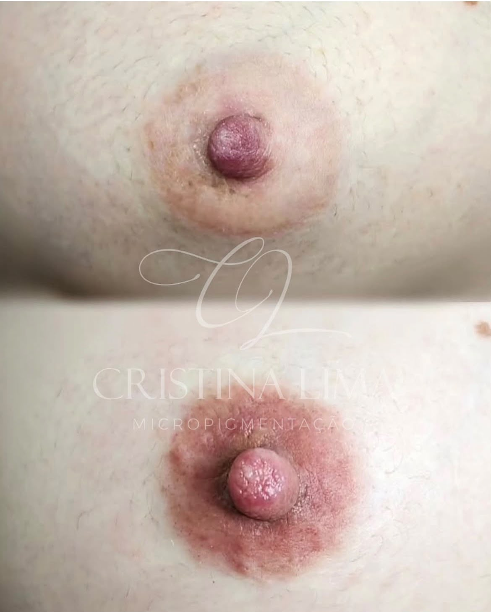
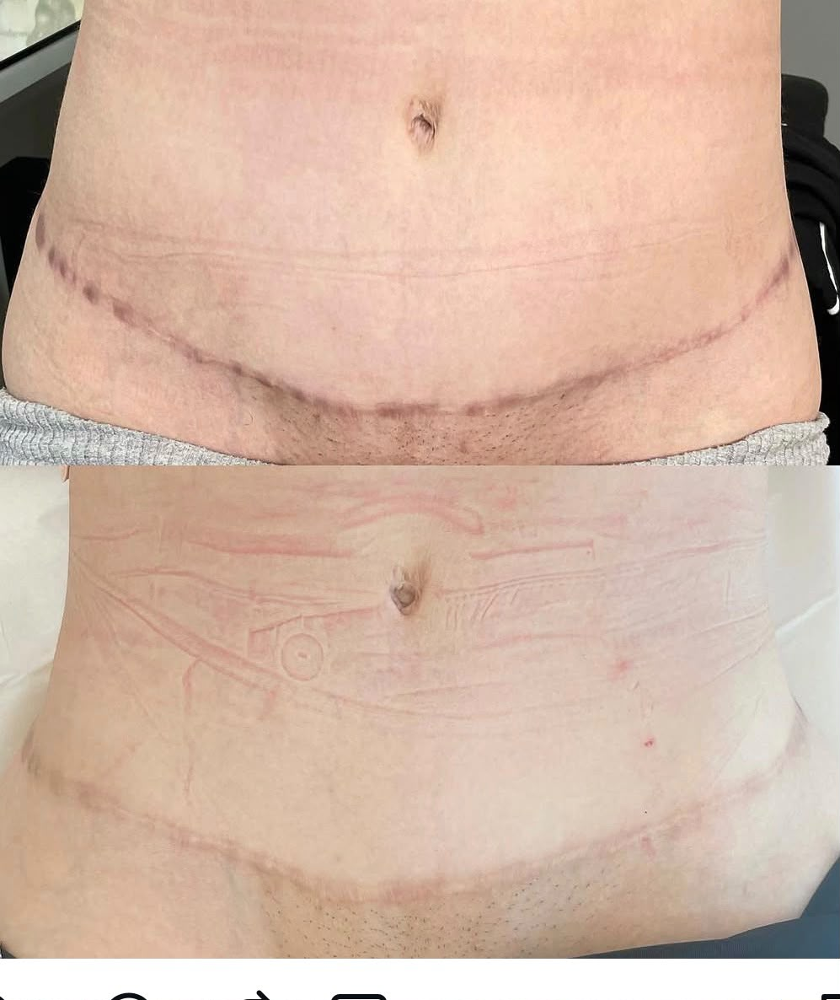
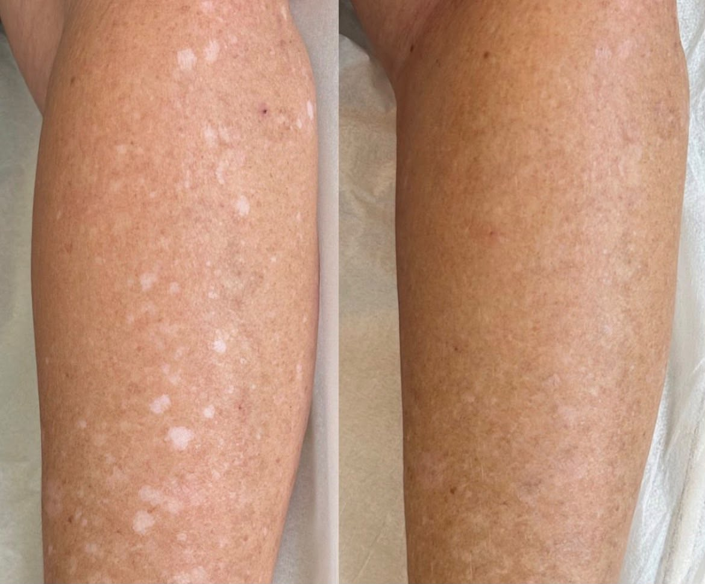
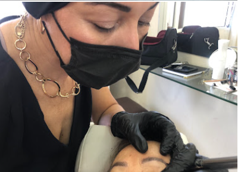
Já foi atendida por Cristina Lima? Conte como foi a sua experiência. Sua avaliação ajuda outras pessoas a escolher com confiança.
AVALIE NO GOOGLEAs dúvidas mais comuns antes de agendar.
Sim. O atendimento é somente com hora marcada, de forma individual e reservada.
Na avaliação personalizada, a profissional entende o que você deseja ou precisa e define a técnica e o protocolo mais adequados ao seu caso.
Sim. Há atendimento de correção e redesenho, inclusive pós mastopexia. Cada caso é analisado individualmente.
Por meio da remoção a laser, indicada para remover ou clarear uma micropigmentação ou tatuagem antes de um novo procedimento ou por não se identificar mais com o resultado.
Camuflagem de cicatrizes, leucodermia e vitiligo, reconstrução areolar parcial, redesenho areolar pós câncer de mama e reconstrução da lâmina labial inferior.
Rua Carlos Villalva, 171 – Vila Guarani, São Paulo – SP. Use o botão “Ver rota” na seção de agendamento.
Cada procedimento começa com uma conversa. Conte o que você deseja melhorar ou corrigir e, a partir da avaliação, será possível entender qual técnica faz mais sentido para o seu momento. Atendimento individual e reservado, somente com hora marcada.
Rua Carlos Villalva, 171